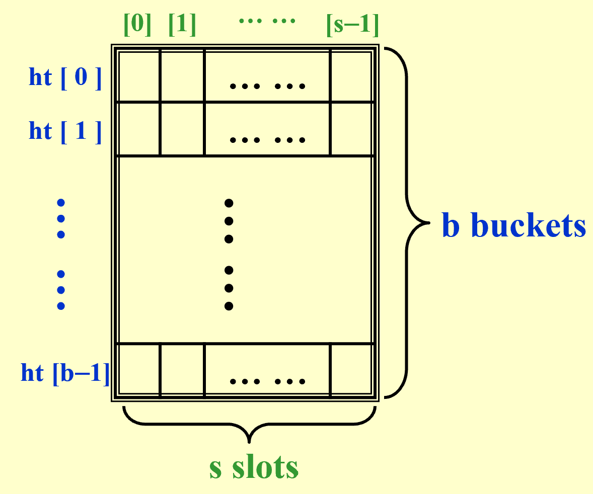

Hashing¶
1 基本想法¶
除了基于比较进行排序，然后查找之外，还能通过对应关系查找。我们提出一种简单表结构 symbol table ，类似字典，有唯一名称和对应的属性。比较重要的操作是查找属性、插入、删除。
哈希表 Hash Table¶

对于每一个标识符 identifier \(x\) ，定义哈希函数 hash function 为 \(f(x)\) ，输出 \(x\) 在哈希表中的位置，即哪一个桶中。
为了评估哈希表的效果，我们记 \(T\) 为标识符的总数，\(n\) 为已放入哈希表中的标识符总数，给出两个指标：
-
标识符密度 identifier density \(\frac{n}{T}\) ；
-
加载密度 loading density \(\lambda = \frac{n}{s \cdot b}\) 。
在将标识符放入哈希表的过程中，会遇到两种特殊情况：
-
collision 当两个不同的标识符放入同一个桶中，即哈希函数输出相同；
-
overflow 当一个标识符被放入已满的桶中。
不难发现，如果没有 overflow ，那么哈希表满足 \(T_{serch} = T_{insert} = T_{delete} = O(1)\) 。
2 哈希函数 Hash Function¶
我们希望好的 \(f(x)\) 具有性质：
-
容易计算并且使得 collision 出现的情况尽量少；
-
分布均匀，映射到每个桶的概率尽量相等，即 \(P(f(x)=i) = \frac{1}{b}\) ；
- 这种均匀的哈希函数一般称为 uniform hash function 。
如何取哈希函数
例如，如果 \(f(x) = x \% \text{TableSize}\) ，那么 TableSize 取质数最好。
Seperate Chaining¶
把哈希值（即位置）一样的标识符放入一个链表中。
Open Addressing¶
遇到 collision 情况时，寻找下一个空位来放入标识符。通过冲突解决函数来探测空位。
3 Open Addressing¶
注意，我们接下来讨论的情况都针对哈希表的每个位置只有一个空格，只能放一个标识符。
Linear Probing¶
线性探测使用线性函数 \(f(i) = i\) 。
容易导致 primary clustering ，在哈希表中形成区块，使得分布不均匀。
Quadratic Probing¶
二次探测使用二次函数 \(f(i) = i^2\) 。
定理
使用二次探测时，如果 table size 是质数，并且哈希表至少有一半空位，那么一个新元素一定能放入。
如果有很多插入、删除操作，那么插入的效率会大大下降；另外虽然这解决了线性探测的区块问题，但是会导致 secondary clustering 。
Double Hashing¶
使用第二个哈希函数来探测 \(f(i) = i \cdot \text{hash}_2(c)\) ，其中 \(\text{hash}_2(x) \neq 0\) ，并且要确保所有位置能被探测到。
一个好的 \(\text{hash}_2(x)\)
\(\text{hash}_2(x) = R - x \% R\) ，其中 \(R\) 取一个比 table size 略小的质数。
Robin Hood Hashing¶
定义探测举例为当前位置 \(c(x)\) 与原本哈希值 \(h(x)\) 的间隔，即
探测距离越小，那么这个标识符越富有。
依次插入标识符时，如果新标识符的探测距离大于当前位置上标识符的探测距离，那么把新标识符放到这个位置，替换出来的原标识符继续向后探测。
4 Rehashing¶
在二次探测中，当哈希表超过一半都有元素时，插入可能失败，这时可以进行 rehashing ，基本思路是：
-
建立新的哈希表，要求 table size 是一个质数，并且至少是原表两倍大；
-
扫描原来的哈希表，找出没有被删除的元素；
-
设计新的哈希函数，把找出来的元素插入新的哈希表。